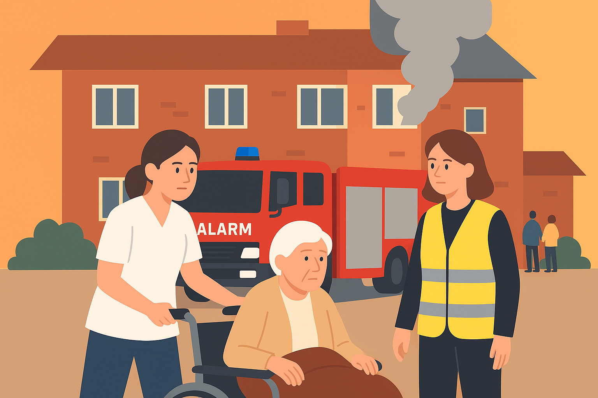

Flammer på fjerde sal – naboer hjalp til fra gaden
En voldsom brand ramte torsdag aften et ældreboligkompleks i Randers.
Se mere
Sådan sikrer du, at ældre kommer hurtigt og trygt ud.
En voldsom brand ramte torsdag aften et ældreboligkompleks i Randers.
Se mere
Under en brand på et plejecenter i Vejle handlede personalet hurtigt og beslutsomt.
Se mereHurtig indsats redder beboere ud af røgfyldt plejehjem i Aarhus.


Hurtig indsats redder beoere ud af røgfyldt plejehjem i Aarhus.
En kraftig brand brød tidligt tirsdag morgen ud på plejehjemmet Solgården i det sydlige Aarhus. Røgen bredte sig hurtigt gennem flere afdelinger, og personalet gik straks i gang med at få beboerne ud. Brandvæsenet ankom få minutter senere og fik ilden under kontrol.
Frivillige fra TrygEvakuering hjalp med at berolige ældre og flytte dem til et midlertidigt samlingssted i nærliggende lokaler. Ingen meldes alvorligt tilskadekomne, men flere er blevet tilset for røgforgiftning. Ifølge indsatslederen blev evakueringsplanen fulgt til punkt og prikke – en indsats, der muligvis reddede liv.
Nattevagter reagerer hurtigt og får alle ud i tide.

Nattevagter reagerer hurtigt og får alle ud i tide.
Klokken 02.14 natten til søndag gik brandalarmen på Bøgehaven Plejecenter i Hillerød. Nattevagterne reagerede straks og begyndte evakueringen, mens røgfyldte gange gjorde det vanskeligt at se.
Flere beboere blev hjulpet ud i kørestole og med støtte fra frivillige, der bor i området. “Alt gik hurtigt, men vi holdt roen,” siger nattevagten Louise Madsen. Brandvæsenet fik ilden slukket efter 40 minutter. Hændelsen understreger, hvor vigtigt det er at kende sin evakueringsplan. Kommunen roser indsatsen og vil bruge erfaringerne i kommende SikkerSammen-træninger.
Modigt personale hjælper ældre i sikkerhed midt i flammerne.

Modigt personale hjælper ældre i sikkerhed midt i flammerne.
Under en brand på et plejecenter i Vejle natten til mandag viste plejepersonalet imponerende handlekraft. I tæt røg og med begrænset sigtbarhed hjalp de ældre beboere ud af bygningen, inden flammerne nåede tagkonstruktionen.
Flere ansatte brugte vådt tøj som beskyttelse mod røg, mens de guidede beboere til sikkerhed. Brandvæsenet roser personalet for at reagere hurtigt og roligt. “Deres indsats var afgørende,” fortæller indsatslederen. Tre personer blev kørt til tjek på hospitalet, men alle forventes udskrevet i løbet af dagen. Plejecentret vil nu gennemgå sin beredskabsplan i samarbejde med SikkerSammen.